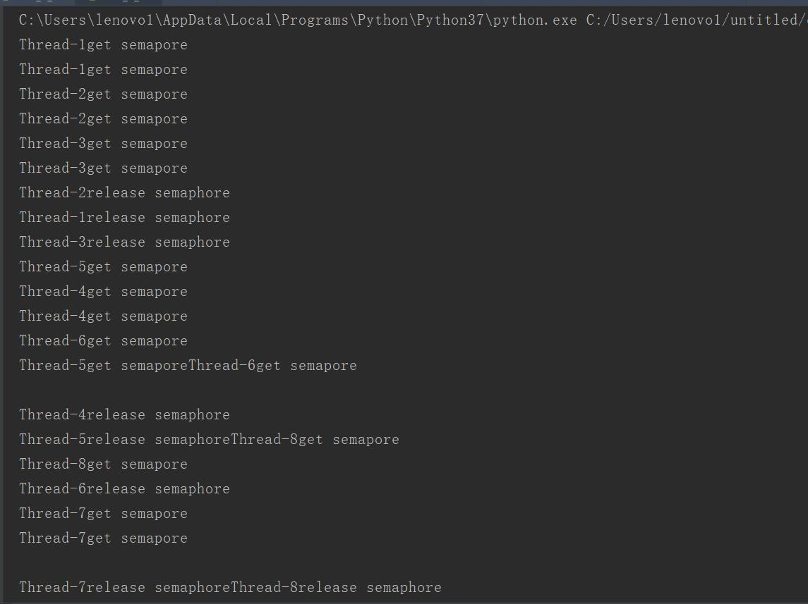
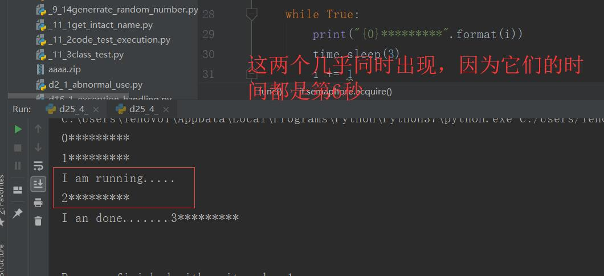
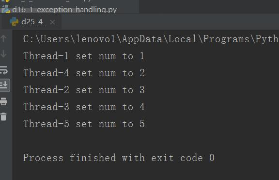

原文出处:本文由博客园博主心悦君兮君不知-睿提供。
原文连接:https://www.cnblogs.com/ruigege0000/p/11489375.html
原文连接:https://www.cnblogs.com/ruigege0000/p/11489375.html
一、允许一个资源最多由几个线程同时进行
命令行：threading.Semaphore(个数)
代表现在最多有几个线程可以进行操作
import threading
import time
#参数定义了最多几个线程可以使用资源
semaphore = threading.Semaphore(3)#这里就是指最多有三个线程可以进行操作
def func():
if semaphore.acquire():
for i in range(2):
print(threading.current_thread().getName() + "get semapore")
time.sleep(5)
semaphore.release()
print(threading.current_thread().getName() + "release semaphore")
for i in range(8):
t1 = threading.Thread(target=func,args=())
t1.start()

二、Timer讲解
格式：threading.Timer(时间间隔，函数）
代表这个函数在“时间间隔”的时间之后启动
def func2():
print("I am running.....")
time.sleep(3)
print("I an done.......")
if __name__ == "__main__":
t2 = threading.Timer(6,func2) #代表6秒之后开始启动线程func2
t2.start()
i = 0
while True:
print("{0}*********".format(i))
time.sleep(3)
i += 1

三、可重入锁
1.一个锁可以被一个线程多次申请
2.主要解决递归调用的时候哦，需要申请锁的情况，可以防止被锁住，重新申请
class MyThread(threading.Thread):
def run(self):
global num
time.sleep(1)
if mutex.acquire(1):
num = num+1
msg = self.name + " set num to "+str(num)
print(msg)
mutex.acquire()
mutex.release()
mutex.release()
def test():
for i in range(5):
t3 = MyThread()
t3.start()
if __name__ == "__main__":
num = 0
mutex = threading.RLock()#可重入锁
test()

解释：我们的线程可以直接进行，不会因为一个申请了，就会被阻塞，依然还可以申请这把锁
四、源码
d25_4_Rlock.py
https://github.com/ruigege66/Python_learning/blob/master/d25_4_Rlock.py
2.CSDN：https://blog.csdn.net/weixin_44630050（心悦君兮君不知-睿）
3.博客园：https://www.cnblogs.com/ruigege0000/
4.欢迎关注微信公众号：傅里叶变换，后台回复”礼包“，获取大数据学习资料